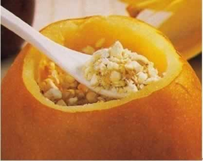
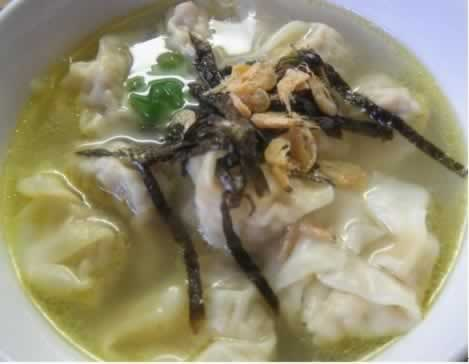

准妈妈必知的防感冒饮食法
准妈妈在孕期预防感冒，是一件非常重要且贯穿整个孕期的事情。那么生活中，如何通过饮食调理来预防感冒的发生呢？当准妈妈受凉，或感觉自己就要感冒时，可以喝一碗热热的红糖姜水或鸡汤，再美美地睡上一觉；还可以请家人在熬制姜汤时加适量辅料如银耳、白砂糖或者加几个鸡蛋，做成可口的荷包蛋姜汤，即营养丰富又有效预防感冒。此外，常吃生蒜、生葱头也是预防感冒的好方法，蒜不但有预防感冒之功效，还能抑制肠道的病菌。准妈妈的日常饮食要清淡少盐，过多的盐分在一定程度上会影响抗病因子的分泌，使人体抵抗力下降。除了孕妇饮食要清淡外，孕妇还应多饮温开水而尽力不喝碳酸饮料。
在家中有人感冒的时候，准妈妈最好戴上口罩。同时，还要有良好的起居习惯，并保持精神放松。情绪低落的人免疫功能也会有所降低，使人体杀伤病原微生物的能力降低；而准妈妈保证充足的睡眠及良好的卫生习惯对孕妇预防感冒也十分重要。
本周推荐尝试食谱1：
朱贝杏仁炖梨
推荐理由：川贝作用于心、肺二经，可化痰止咳、适用于妊娠阴虚燥咳、肺虚久咳等症状。
食谱原料：
川贝10克，杏仁5克，梨1只，冰糖。
制作方法：
1、川贝、杏仁分别敲碎：将梨的尖端削出一个盖状，并挖去梨核。
2、川贝、杏仁加冰糖放入梨中，放入蒸锅中蒸10分钟即可。
本周推荐尝试食谱2：
鸡汤小馄饨
推荐理由：这款小馄饨精致可口，不仅可以使准妈妈获取多种营养素，未来还可以做给宝宝吃哦！
食谱原料：
小馄饨皮6张、鸡汤200毫升，鲜肉末50克、土豆泥50克，植物油适量。
制作方法：
1、用植物油将土豆泥和鲜肉末调成馄饨馅；
2、取小馄饨皮，包入馅料，制成馄饨生坯；
3、锅置火上，倒水煮沸。下馄饨煮熟后。捞到温热的鸡汤里即可。